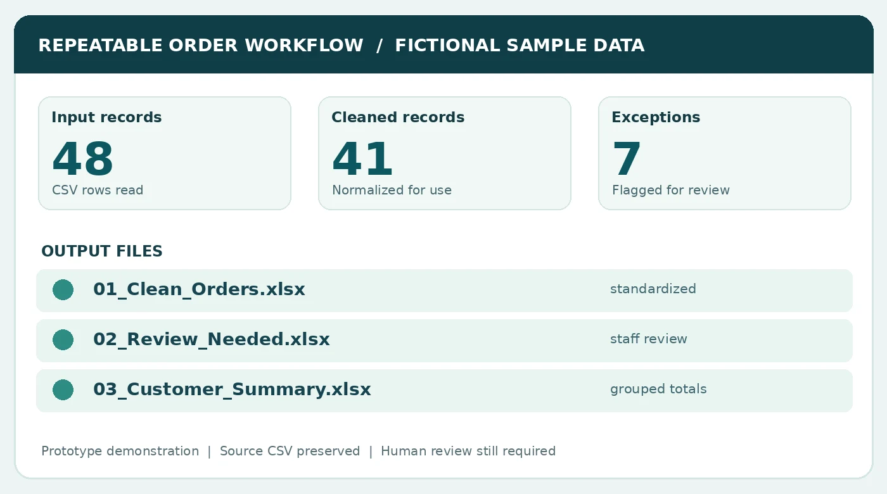

Spreadsheet processing
Clean and combine recurring CSV or Excel exports, standardize fields, and produce a reliable workbook.
GeoSite Intel builds focused automation tools for the work you keep repeating - spreadsheets, reports, files, data checks, and GIS workflows. Less manual busywork. More time for the work that matters.
Repetition eats up hours: downloading files, moving values, fixing formats, renaming folders, and rebuilding the same report. A small, well-built script can make those steps consistent and repeatable.
Clean and combine recurring CSV or Excel exports, standardize fields, and produce a reliable workbook.
Prepare repeatable reports, summaries, and documents from structured input data.
Create project structures, batch-rename files, organize exports, and log what changed.
Repeat common QGIS and Python mapping, analysis, reprojection, QA, and export tasks.
Flag missing values, duplicates, inconsistent formats, and records that need human review.
Turn a documented sequence of clicks and decisions into a focused, reusable script.
Our sample order-processing workflow uses fictional business records to demonstrate a real Python script. It reads recurring exports, standardizes records, separates exceptions for review, and generates three Excel files.
Example only - these figures describe one synthetic test, not promised results for client projects.
See the workflow demo
No sweeping system replacement. A defined problem, agreed results, and a tool you can understand.
Share sample files, the steps you follow today, and what a finished result should look like.
We define file types, exceptions, review points, deliverables, and project pricing before the build.
The tool is tested on agreed examples, documented, and delivered under the written scope.
GeoSite Intel began in geography, GIS, environmental research, and repeatable spatial analysis. That experience shapes the same priorities in every automation project: clean inputs, visible assumptions, careful checks, and useful outputs.
Explore past technical work Read the published researchDescribe the task, its frequency, and the output you need. GeoSite will review technical fit and reply by email.
Email your task to GeoSite